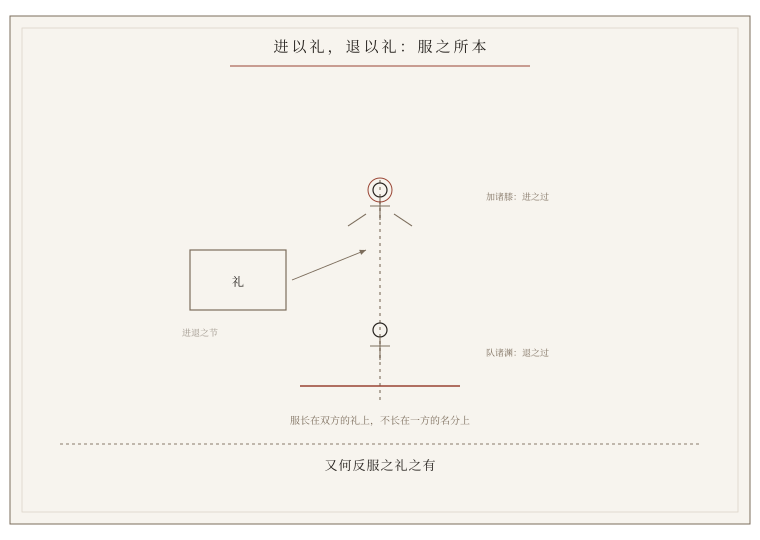

檀弓下 · 四·三十七 · 第 362 课
穆公问于子思曰：「为旧君反服，古与？」子思曰：「古之君子，进人以礼，退人以礼，故有旧君反服之礼也。今之君子，进人若将加诸膝，退人若将队诸渊；毋为戎首，不亦善乎？又何反服之礼之有？」
说什么事：鲁穆公问子思：离开本国的人，还为旧日的国君服丧，这是古礼吗？子思答：古时的君子，进用人体之以礼，黜退人也体之以礼，所以才有「为旧君反服」这一条礼。如今的人，进用你时像要把你抱到膝上，黜退你时像要把你推下深渊；能不反过来带兵来攻，已经算好了，还谈什么反服之礼？
落在哪一层：以「对等」量礼。论服的责任，长在双方的礼上，不长在一方的名分上。
为何编在此位：上节论器物之似，此节论名分之实。似与实，同一问的两面。
【经】穆公問於子思曰：「為舊君反服，古與？」子思曰：「古之君子，進人以禮，退人以禮，故有舊君反服之禮也。今之君子進人若將加諸膝，退人若將隊諸淵；毋為戎首，不亦善乎？又何反服之禮之有？」
【注】仕焉而已者。穆公，魯哀公之曾孫。／言放逐之臣，不服舊君也。為兵主來攻伐曰戎首。
【疏】此一节论不为旧君著服之事。案《丧服》齐衰三月章「为旧君」凡有三条：其一云「为旧君，君之母妻」，传云「仕焉而已者也」，注云「谓老若有废疾而致仕者」，兼服其母妻；其二「大夫在外，其妻长子为旧国君」，注云「在外待放已去者」；其三为「旧君」，注云「大夫待放未去者」，传曰「大夫去君，扫其宗庙，言其以道去君，而犹未绝也」。／云「穆公，鲁哀公之曾孙」者，案《世本》云「哀公生悼公灵，灵生元公嘉，嘉生穆公不衍」是也。／《孟子》：齐宣王问孟子云：「礼为旧君有服，何如斯可为服矣？」孟子对曰：「谏行言听，膏泽下于民；有故而去，则君使人导之出疆，送至彼国，明其无罪；其所往三年不反，然后收其田里。此之谓三有礼焉。如此者得为旧君反服矣。」
旧君 已离其国而曾仕之君。
反服 反过来为旧君服丧。反者，还也。
古与 古时有此礼吗。「与」为疑问语辞。
进人 进用、举拔。
退人 黜退、放逐。
加诸膝 抱置于膝上，极言亲昵。
队诸渊 队即坠，推落深渊，极言绝情。
戎首 注「为兵主来攻伐曰戎首」，即带兵来攻的领头者。
何反服之礼之有 反问句式，谓无此礼。
鲁穆公问子思：「离开本国的人还为旧君服丧，这是古礼吗？」子思说：「古时的君子，进用人依礼，黜退人也依礼，所以才有为旧君反服之礼。如今的人，进用你时像要把你抱到膝上，黜退你时像要把你推下深渊；能不带兵回来攻打，就算好了，还有什么反服之礼可言？」
此章一问一答，问的是礼制，答的是一个前提。
问：还有这条礼吗？ 答：这条礼是有的，但它长在别的东西上面。那东西没有了，礼就无从长。
第一层 反服之礼，本有其文 《丧服》齐衰三月章确有「为旧君」之条，且分三种：致仕而在国者、待放已去者之妻与长子、待放未去者。
子思不曾否认此礼。他否认的是「在今日还成立」。
第二层 礼长在礼上 「古之君子，进人以礼，退人以礼，故有旧君反服之礼。」
一个「故」字，是此章的关键：服之所以存在，是因为进退都以礼。
服是果，礼是因。因不存，果无从立。
第三层 加诸膝、队诸渊：同一个人，两个极端 进时抱到膝上，退时推下深渊——这不是两种态度，是一种：以己之好恶待人，不以礼待人。
好时过分亲，恶时过分绝。子思用两个动作写尽一种人格。
第四层 毋为戎首：最低的一条线 「毋为戎首，不亦善乎？」
此语看似低得可怜，实则是把标准落到了实处：既然无礼可依，那么不举兵相攻，已是可许。
礼在此时不做高标，只守底线。礼学最见分寸处，不在标准最高时，在标准只能降低时。
第五层 今日之用：名分与实质 今之职场、师门、团体，多有「前东家」「旧师」「原单位」之谊。
此章给一把尺：这份情分该有多重，不看你曾在那里待过多久，看双方当初如何相待。
若无礼而强求情，则情成了债；若有礼而情自生，则情不必求。
与今日何干 凡论「应不应该念旧」，先问「当初是否以礼」。此一问定，则答案自出，不必争。
| 左 | 右 |
|---|---|
| 旧君 | 曾仕之君 |
| 反服 | 还为旧君服 |
| 进人以礼 | 举拔有节 |
| 退人以礼 | 黜退有节 |
| 加诸膝 | 亲之过分 |
| 队诸渊 | 绝之过分 |
| 戎首 | 为兵主来攻 |
| 毋为戎首 | 最低之线 |
| 何反之有 | 无此礼 |
画面画一条竖直的中线，线之上端画一人形被高高托起，托者只画双手与双臂，手心向上，人形几近其胸；线之下端画同一人形被推落，下方画一道深色的横缺口，示深渊。中线的中段留空，不画任何物。画面的左侧另画一小方框，内书「礼」字（或留白），以一道细线指向中线的中段。不画面部。赭色只用在下方深渊的缺口边沿。
